Favorites
See a collection of all my current favorites, albums and artists! Hover over
each album cover to read more.
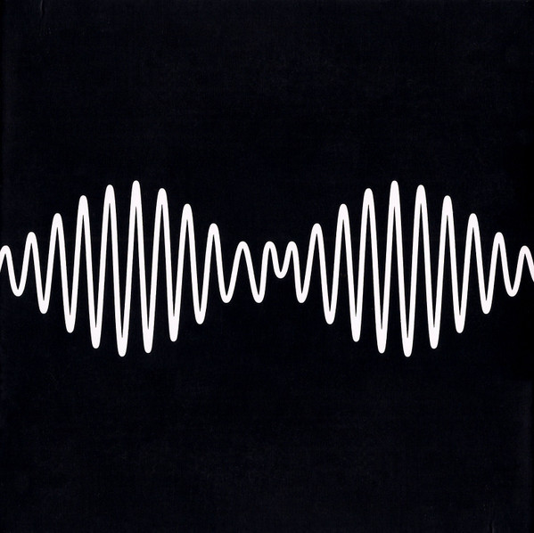
This album is the epitome of 2014 tumblr and I love it dearly. Even if you've never put on this album yourself, you already know half of the songs.
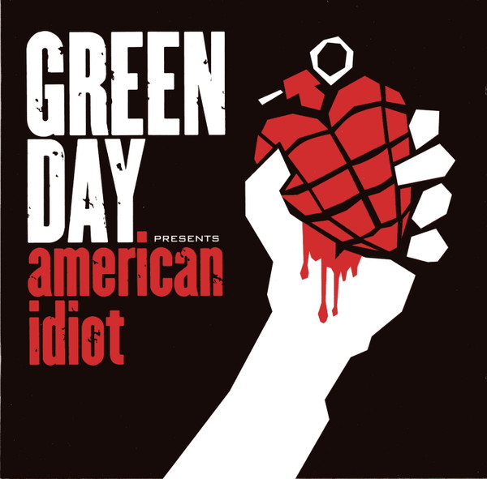
This album was the most important piece of media to my 14 year-old self and still holds a special place in my heart to this day.
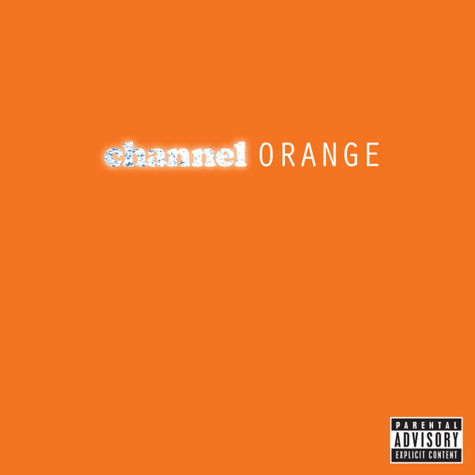
There is so much talent packed into this one album, it's unbelievable. I don't remember a life before it.

Everytime I listen to this album, it makes a Monday in January today, feel like a Friday in June of 2016. Such a fun listen.
The minute it hits 60 degrees outside, this album does not leave my rotation until March. This album carries one of the most significant messages to me: nothing is forever, but neither is pain.
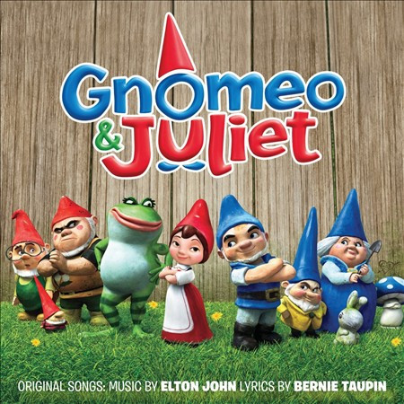
This album is just a compilation of Elton John's greatest hits backdroped with talking gnomeos reenacting Shakespeare and it's perfect.
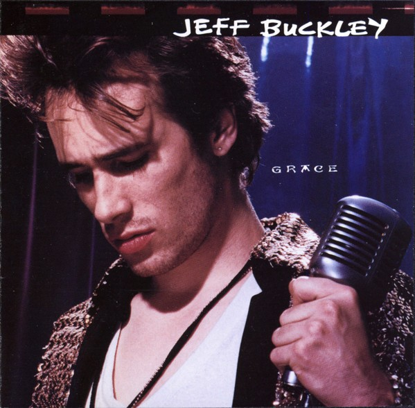
The perfect album for the people who can't get over anything, ever.
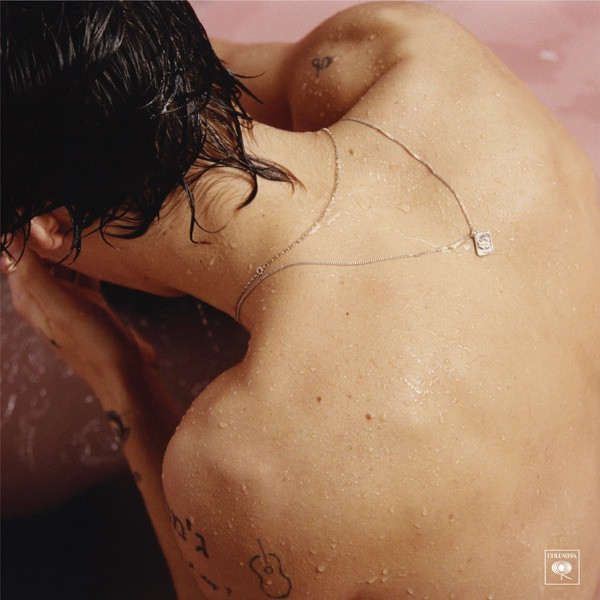
One Direction breaking up was one of the most devestating things to happen in 2016 and this album was reparations. Every new Harry Styles release, I pray he makes his way back to the sound of this album.
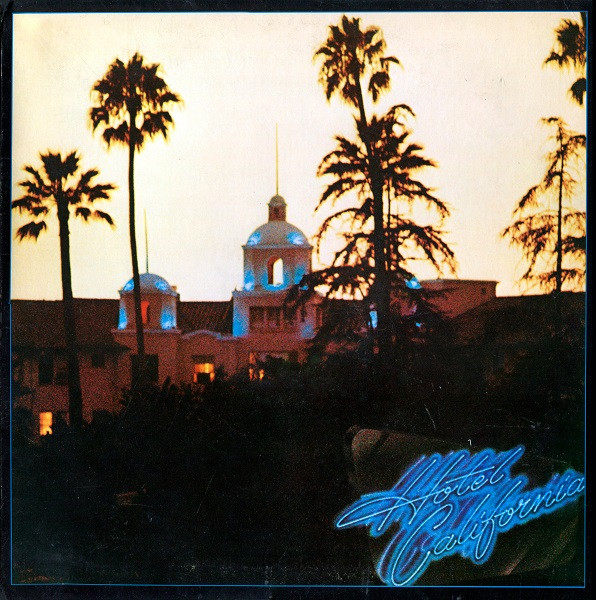
If you are ever driving between California and Arizona, it's the perfect album to put on.
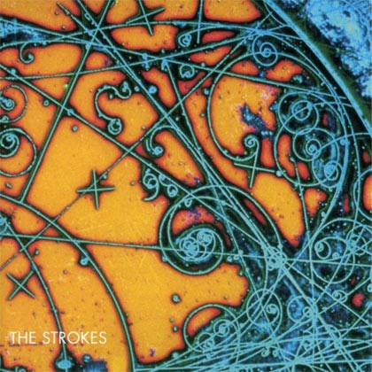
This album influenced everyone and everything. It still holds up as one of the greats 25 years later.
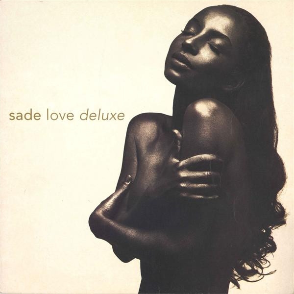
This album is short, but so, so sweet. It feels like walking on the beach in a sweatshirt on an overcast day (in all the best ways).
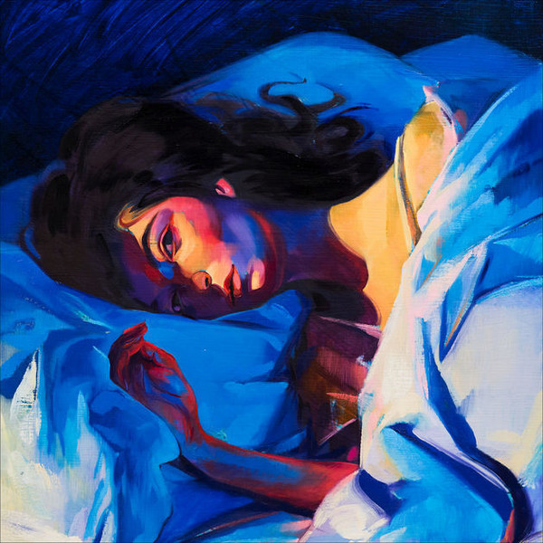
If you've ever been a teenage girl, this album will resonate with you. It's such a cathardic album. You'll have to rip it from my hands before I ever let it go.
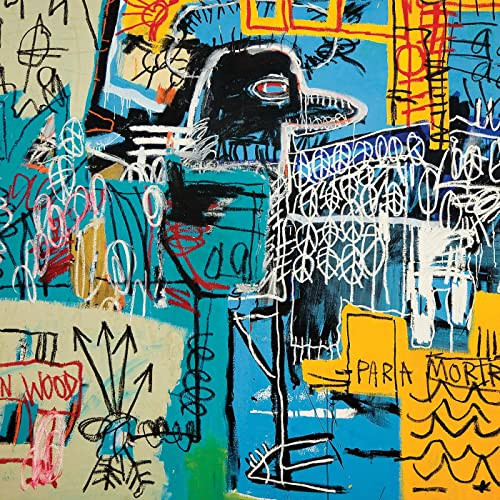
Even 20 years after their debut, The Strokes created an album that somehow feels both modern and nostaligc.
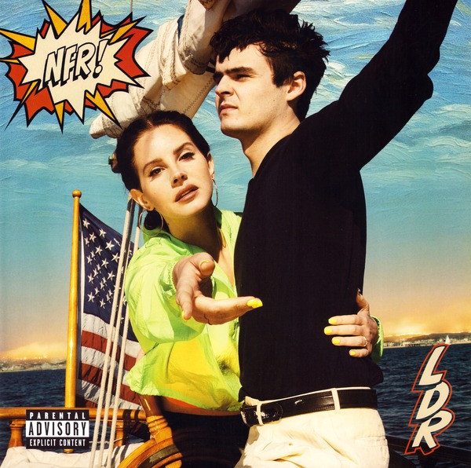
This album came out in 2019 and somehow captured the retrospective of the turn of the decade before it ever happened. Lana Del Rey is a generational artists and this album will tell you exactly why.
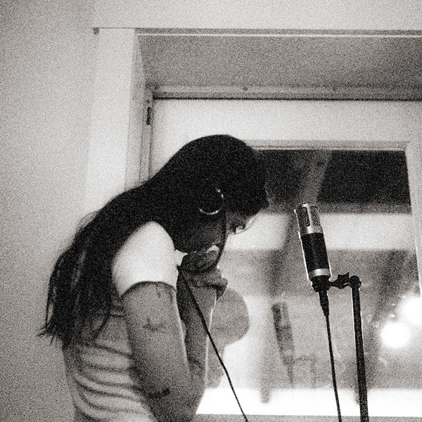
A deluxe version has never elevated it's original album so much.
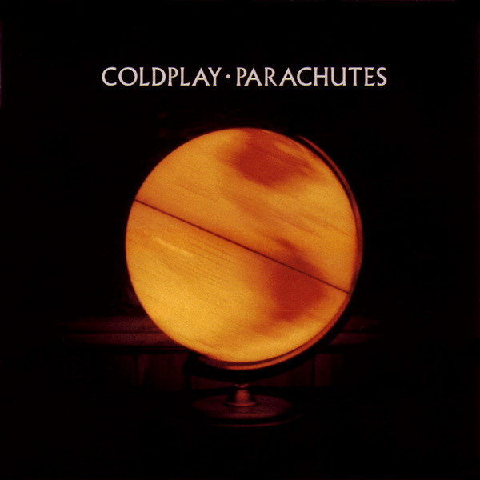
This album is such a warm light whenever I put it on. It's a must-listen classic.
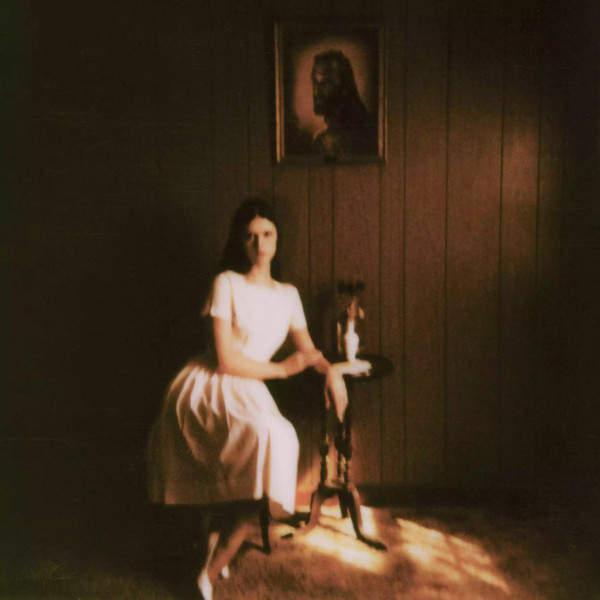
This album makes your jaw drop from the first track and refuses to have a dull momenet until the end. The storytelling alone, makes sure you come back for another listen.
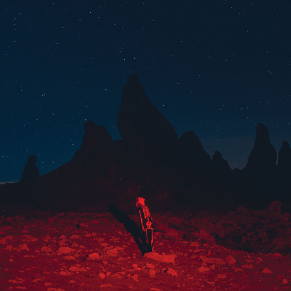
This album is always here for me when I'm feeling bad and I need to feel worse.
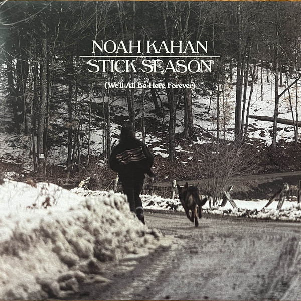
This album encompasses lonliness, grief, anger, fear, and a little bit of hope so beautifully. All with a little bow on top!
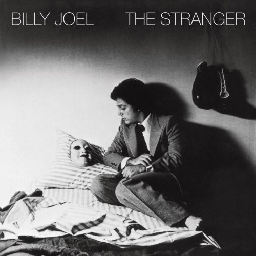
This album feels like an artifact passed down from my dad to me. It holds such a special place in my heart, right next to NYC pizza.
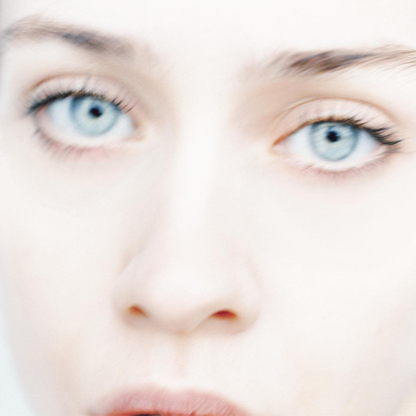
Fiona Apple is the song-writing queen of the 90's. This album is in the hall of fame of debut albums and will never be knocked off that pedestal.
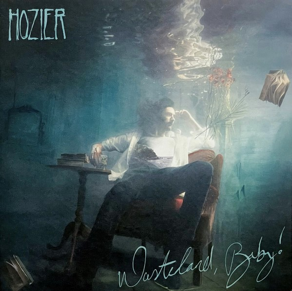
"Dull" and "Hozier" are oxymorons. Both lyrically and sonically, this album speaks to the soul. There is not a single song on the album that was pushed to the side. It's undeniably phenomenal.
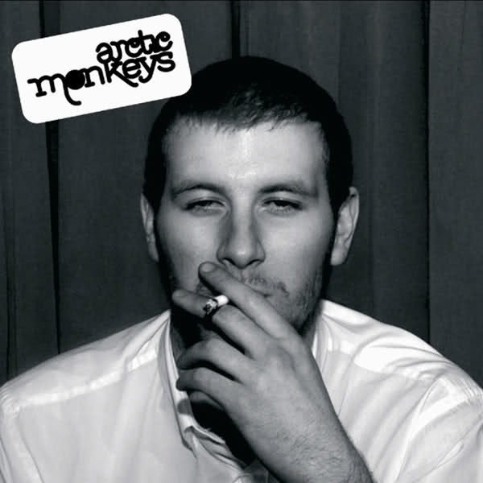
In the dictionary right next to "British teen attitude" is a picture of this album. This album perfectly captures the time and place it was created in such a special way.
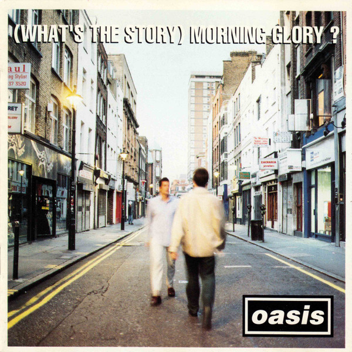
It's one of the biggest albums for a reason. There is not a bad song. It's endlessly relistenable, it's timeless, it's phenomenal.
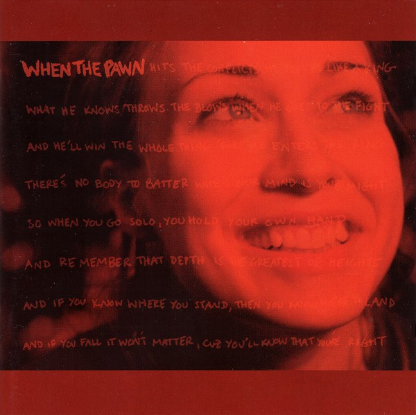
No one could make an album comparable to Fiona Apple's "Tidal," except Fiona Apple.